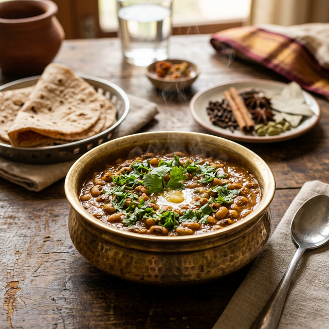

Recipe
Recipe
Authentic Chicken Curry with Tongue Feast Chicken Masala
A bold aromatic chicken curry simmered in onion-tomato gravy with our signature Chicken Masala. Rich, flavorful, and pairs perfectly with roti or rice.
Read Recipe → Recipe
Recipe
Bharwan Baingan — Stuffed Eggplant with Kala Masala
Baby eggplants stuffed with a spicy mixture of Kala Masala, peanuts, coconut, and sesame. A classic Maharashtrian comfort dish.
Read Recipe → Recipe
Recipe
Saoji Mutton Curry — Fiery Nagpur-Style
Intensely spiced mutton slow-cooked with Tongue Feast Saoji Masala. Dark, rich, and unapologetically hot — a true Vidarbha legend.
Read Recipe → Recipe
Recipe
Classic Mutton Curry with Tongue Feast Mutton Masala
Tender bone-in mutton in a luscious red curry made with our signature Mutton Masala. Serve with rice or hot rotis.
Read Recipe →
RecipeSpicy Chavali Masala (Black-Eyed Pea Curry)
A protein-packed comfort dish made with Tongue Feast Kanda Lasoon Masala. Perfect for a quick, authentic Maharashtrian meal.
Read Recipe →Master Gravy for Sev Bhaji and Misal Pav
One spicy, aromatic gravy — two legendary dishes. Use our Sevbhaji Masala to create these classic snacks at home.
Read Recipe →